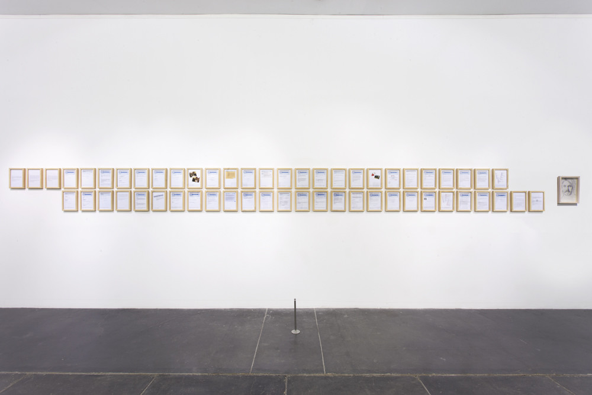

伊斯坦布尔画家

文献尺寸可变，素描25x35cm，2011
曾经某一天，我凭空设想了一个人：他叫阿里，生活在伊斯坦布尔，年龄跟我相仿，也是个年轻艺术家。我给阿里写了一份信，告诉他，如果他能看到这份信，给我回信，告诉我他的模样，我会给他画一张肖像画。9个月后我收到了回信。
在去年尤伦斯的青年群展上，展出了他的《伊斯坦布尔画家》。最普通的一张画在A4大小尺寸纸上的素描，是借助现代网络联系方式才终于找到这个叫做阿里的艺术家，将一次冒险的想象化为现实。——隋建国
石玩玩近来尝试着把艺术实践抛入社会关系的偶然性中去完成，这使的他工作成为了一种社会测试。《伊斯坦布尔画家》是石玩玩根据自身所想象出的一个身处异邦的镜像，在石玩玩的设定中，“他”是一个三十岁左右的叫做“阿里”的年轻画家，居住在一个他毫不了解城市，如伊斯坦布尔。经过了各种可能的途径与漫长的过程，石玩玩找到了那个伊斯坦布尔的画家，展览中的55张文件与邮件呈现了这个经历，而素描肖像则是根据阿里的自我描述所画。但实际上，石玩玩的出发点并不是为了验证个人的想象，而更多是在观念中建构一种可能性的社会关系，并在其中实验几率的可能。——尤伦斯当代艺术中心